While visiting https://netnet.studio is the common starting point, you can actually navigate to specific content directly using URL parameters (the ?key=value part of a URL) and URL hashes (the #value part). Below you'll find a breakdown of the different URL parameters and hashes netnet supports, as well as a usage examples for educators.

A netnet URL does not necessarily need to contain any URL parameters, but it can contain different combinations of any of the following:
| Parameter | Description |
|---|---|
?tutorial=[name] |
Name of a tutorial to automatically load, e.g. https://netnet.studio/?tutorial=orientation. You can also start at a specific point using &t=[seconds], e.g. https://netnet.studio/?tutorial=orientation&t=60 starts 1 minute in. |
?demo=[id] |
ID of a demo (annotated code example) in netnet's database, e.g. https://netnet.studio/?demo=49 |
?template=[name] |
Name of a template project to automatically load, e.g. https://netnet.studio/?template=css-art |
?w=[key] |
Key name of any netnet widget to open automatically on load, e.g. https://netnet.studio/?w=learning-guide |
?c=[shortcode] |
A shortcode referencing a compressed sketch URL in netnet's database (a shorter alternative to #code/), e.g. https://netnet.studio/?c=6 |
?layout=[type] |
Layout to display on load: welcome, separate-window, dock-left, dock-bottom, or full-screen. Intended to be combined with a ?c= or #code/ sketch, e.g. https://netnet.studio/?c=6&layout=dock-left |
?gh=[user/repo] |
GitHub username and repository name separated by /, with an optional branch (defaults to main), e.g. https://netnet.studio/?gh=netizenorg/artware-workshop/master |
netnet hashes are one way to pass your own data into the netnet editor. These hashes must always come at the end of the URL, which means if URL parameters are present, the hash must be written after the URL query params.
| Hash | Description |
|---|---|
#sketch |
Loads netnet in dock-left layout with a blank file, skipping the default greeting so you can jump straight into coding. Also accessible via http://netnet.studio/sketch. |
#code/... |
Compressed HTML/CSS/JS code from netnet's editor. This can get quite long, which is why the ?c= shortcode param exists. By default netnet displays the sketch fullscreen, but you can combine with ?layout= to show the editor, e.g. https://netnet.studio/?layout=dock-left#code/eJyzSU7NK0kt... |
#demo/... |
Like #code/ but the compressed data also includes code annotations created with the Demo Maker widget. Loads as an annotated sketch that steps through the annotations automatically, e.g. https://netnet.studio/#demo/eJw9jcsKw... |
This is one of the most useful features for educators, rather than telling students "open the Learning Guide, find the HTML section, click on the third demo," you can simply post a link in your course notes that opens netnet with that demo already loaded. The same goes for your own annotated examples or github starter projects. Here are some examples...
You can quickly open a blank sketch on netnet by navigating to http://netnet.studio/sketch which actually subtly redirects to https://netnet.studio/#sketch (with the #sketch). Once there you can create an example or starter sketch for your students, then hit {SUPER}+S and choose the share sketch as netnet URL option in the passage. This will generate a link with the sketch's coded embedded into the #code URL hash, like https://netnet.studio/?layout=dock-left#code/eJzLSM3JyQcABiwCFQ==. Sharing or linking to that URL will launch netnet with your sketch opened up automatically (no intro conversation, no hunting through menus).
You might also notice that in addition to the #code hash, the Share Sketch Widget also adds the ?layout=dock-left URL parameter. You can combine URL parameters and URL hashes, so long as the hash is written after the URL params. You can change or remove that parameter from the URL manually (which will render the sketch fullscreen and keep netnet hidden), but you can also use the widget's layout dropdown menu to change the URL parameter as well.
An annotated demo is what we call a sketch (single HTML file) that has built in netnet passages which explain different parts of the code. These are linked throughout netnet, in the Demo Sketches widget, but also in the Learning Guide, the Notes on AI, etc. Anytime you open one, you'll notice your browser's URL changes to something like https://netnet.studio/?demo=4. The ?demo= URL parameter is how you can link directly to a specific netnet demo.
You could also create your own annotated demos! Use netnet's search bar to find the "Demo Maker", this is one of a handful of meta-widgets for creating netnet content. Select new in the Demo Maker and you'll be given a blank sketch, create your sketch and then use the Demo Maker to annotate it with your own notes. Then click the shareable link option and it will create a link with the #demo/... URL hash with your sketch as well as your notes encoded into the URL. You can then share/link this with your students and it will take them directly to that annotated demo.
If you create an annotated demo you think the broader netnet community can benefit from, consider pressing the download button as well, that will generate a .json file which you can submit as a PR for inclusion in netnet.studio!
netnet integrates with GitHub, so you can create and open projects directly in the editor. If you've built a starter project or example repo and want students to work from it, you can link to it using the ?gh=[username/repository] URL parameter, for example https://netnet.studio/?gh=netizenorg/artware-workshop. The repo needs to have an HTML file at its root to render correctly in the editor.
What makes this especially useful for teaching is how netnet handles ownership. When you navigate to your own repo, netnet gives you the option to open and edit it directly. When a student navigates to the same URL, netnet instead gives them the option to fork it, creating their own copy on their GitHub account. This means you can use any repo you've created as a live starter template: share the ?gh= link in your course notes and students each get their own independent fork to work from. Since those forks are real GitHub repositories, this also opens the door to teaching git workflows, pull requests, and collaboration between students.
If there's a specific tutorial you want students to work through, you can link directly to it using the ?tutorial=[name] parameter, for example https://netnet.studio/?tutorial=orientation. You can even link to a specific moment within a tutorial by adding a second parameter &t=[seconds]; note the & instead of ?, which is how you chain multiple URL parameters together. So https://netnet.studio/?tutorial=orientation&t=120 would drop students in two minutes into the orientation tutorial.
You can also link directly to any widget using ?w=[key], which is handy if you want students to open a specific reference or tool right away, for example https://netnet.studio/?w=css-reference. The Learning Guide is a special case, it also supports linking to specific sub-sections within the guide, for example https://netnet.studio/?w=learning-guide/ai opens directly to the Notes on AI section.